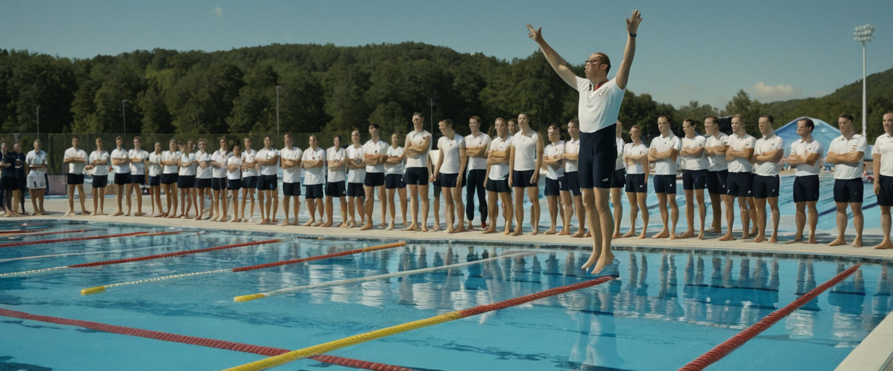

Entrenador revoluciona el deporte: Asegura que nadar en el aire "mejora la resistencia y la imaginación" de los atletas
En un giro que ha dejado a la comunidad deportiva literalmente sin aliento, el controvertido entrenador de natación, Burbuja McSplash, ha introducido una nueva técnica de entrenamiento que está haciendo olas en el mundo del deporte: nadar en el aire. McSplash asegura que esta innovadora práctica "mejora la resistencia y la imaginación" de los atletas, aunque los críticos argumentan que simplemente mejora su capacidad para parecer ridículos.
El método de McSplash, bautizado como "AeroSwim", consiste en que los nadadores realicen sus movimientos de natación habituales, pero suspendidos en el aire mediante un complejo sistema de arneses y poleas. "El agua es tan 2022", declaró McSplash en una reciente demostración. "El aire es el nuevo medio para los nadadores de élite. Es más ligero, más abundante y, lo mejor de todo, no necesitas secarte después".
Los atletas que han probado el método AeroSwim reportan experiencias mixtas. María Mariposa, campeona nacional de 100 metros mariposa, comentó: "Al principio me sentí como un pez fuera del agua... literalmente. Pero después de unas semanas, realmente puedo sentir cómo mi imaginación se está fortaleciendo. Ahora puedo visualizar el agua con tanta claridad que a veces olvido que estoy seco".
Sin embargo, no todos están convencidos. El Dr. Húmedo, fisiólogo deportivo, expresó su escepticismo: "Desde un punto de vista científico, esto es absurdo. Es como intentar mejorar tu técnica de ciclismo practicando en una bicicleta invisible. Aunque debo admitir que los atletas están desarrollando unos abdominales impresionantes de tanto reírse".
A pesar de las críticas, McSplash insiste en que su método tiene beneficios tangibles. "Piensen en ello", argumentó, "si pueden nadar en el aire, ¡imaginen lo fácil que será en el agua! Además, estamos ahorrando una fortuna en cloro y mantenimiento de piscinas".
El método AeroSwim ha captado la atención de entrenadores de otros deportes. Rumores sugieren que un entrenador de fútbol está considerando hacer que sus jugadores practiquen con balones imaginarios para "mejorar su conexión psíquica con la pelota".
Mientras tanto, los fabricantes de trajes de baño están en pánico, temiendo que la natación aérea pueda llevar a una disminución en las ventas. En respuesta, una marca líder ha anunciado una nueva línea de "trajes de aire" que prometen "cero resistencia al aire y máxima aerodinámica para tu natación imaginaria".
A medida que el debate sobre la eficacia del AeroSwim continúa, una cosa es cierta: los gimnasios nunca volverán a ser los mismos. Los miembros ahora deben navegar entre nadadores suspendidos en el aire, lo que ha llevado a un aumento en las colisiones y confusión general. Como comentó un usuario del gimnasio: "Vine a levantar pesas y ahora tengo que esquivar personas haciendo el estilo mariposa a dos metros del suelo. Es como un circo acuático, pero sin el agua".
Mientras el mundo del deporte observa con una mezcla de fascinación y escepticismo, McSplash continúa defendiendo su método. "Los grandes visionarios siempre son ridiculizados al principio", afirmó. "Hoy nos reímos de la natación aérea, mañana estaremos organizando las Olimpiadas en el espacio. Recuerden mis palabras".